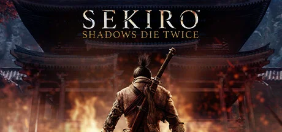
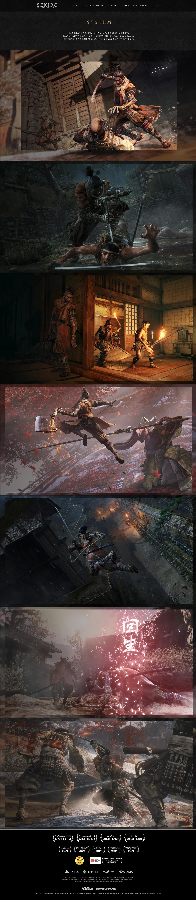
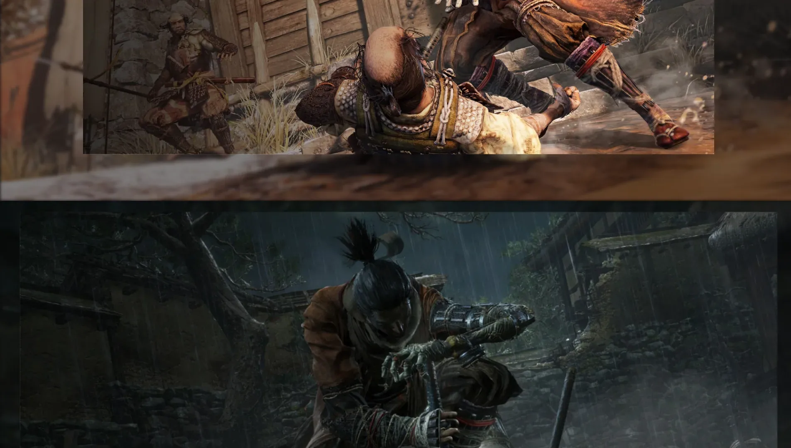
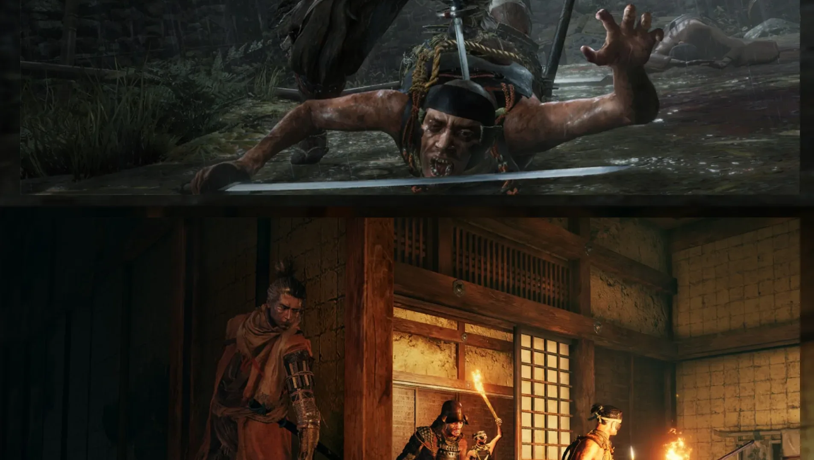
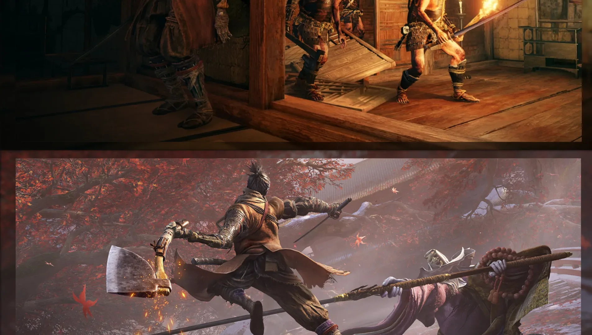
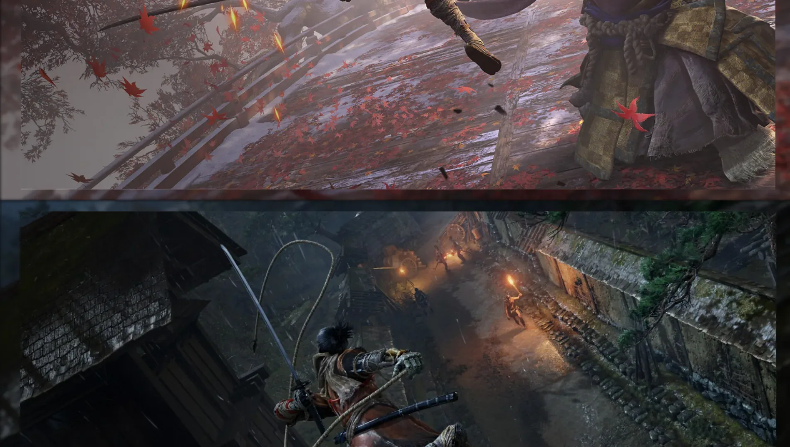
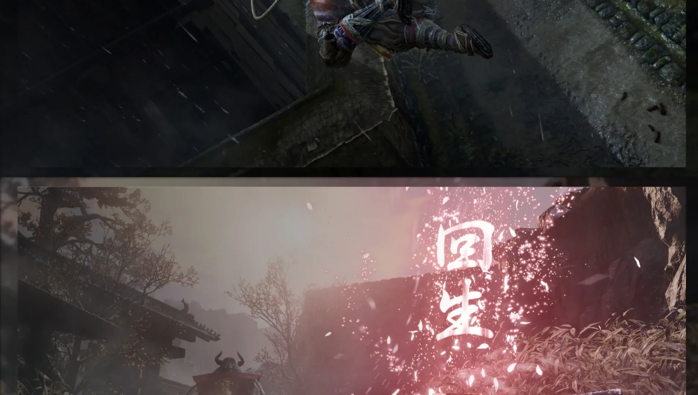
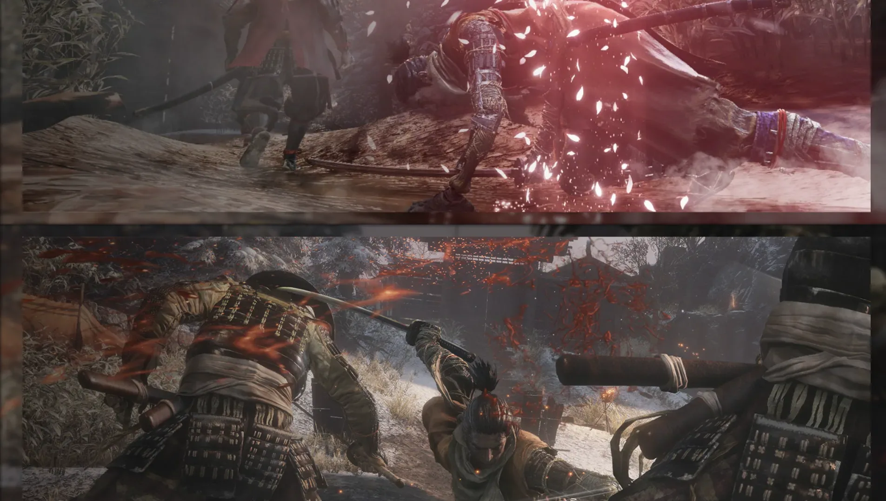
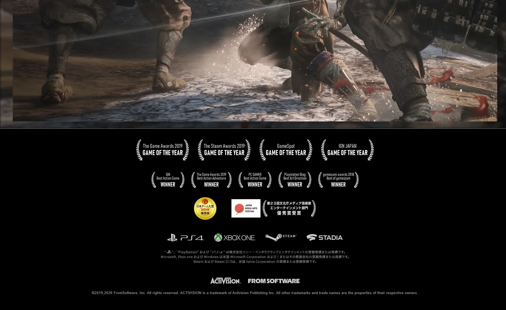

FromSoftware 代表作，以弹反、架势与高压 BOSS 战为核心。








你站在一座灰色的苇名国城下，远处是被内府军围攻的天守阁，近处是开了又落的樱花瓣。这里看起来像黑泽明电影里那种风一吹就萧瑟一整片的战国末年——枯山水、铁锈味、夜里能听见远处武士在喘。可这地方藏着一件事：苇名手里握着「龙胤之血」，能让人死而复生。整个江湖都为这滴血发了疯，不死的诅咒，就这样从一个少年身上慢慢漫开。
你叫狼——独臂忍者，左手装着一只可以换形态的义手。你的主公是龙胤皇子，护他活下去是你被造出来的唯一理由。但你很快会发现，不死不是恩赐，是一份要别人替你付账的债：每次你死而复生，身边的人就会染上龙咳，咳到吐血、咳到死。师傅、村妇、商贩——你越想活下去，他们就越在你背后倒下一片。
盯着你的人远不止内府。你的师傅会在某条山路上拔刀对你；变若之子用苍白的脸念着你听不懂的咒；天守阁顶上，苇名一心那把名刀正在等你。屏幕上，那个红色的「危」字会一遍又一遍跳出来，提醒你慢一秒就是另一次死。这不是一个关于复仇的故事，是一个关于「该让谁先放下刀」的故事——四个结局都摆在那条山路尽头，你打算用哪一个手势收刀？
枯山水 × 铁与血，是 FromSoftware 把日本战国写实和暗奇幻不死诅咒糅在一起的硬核东方美学。它的底色是黑泽明电影式的灰调战国——风化木墙、苔藓石阶、暮色苇名城；情绪色锁定在樱花粉与鲜血红这两种互为反差的高饱和点缀，其余颜色被压到几乎沉默。整体调性介于黑泽明《七武士》的写实苦寒与《血源诅咒》的暗奇幻压迫之间——既考据，又不真实。
这种美学不是一夜出现的。1950-60 年代，黑泽明用《七武士》《用心棒》定型了「灰调写实战国 + 高对比剪影武士」的电影语言；1980-90 年代的日本动漫与游戏（《浪客剑心》《天诛》系列）把忍者/义手/钩索带进了大众视觉记忆。进入 2010 年代后，FromSoftware 自己用《黑暗之魂》《血源诅咒》验证了「写实灰调 + 局部超自然鲜血」的硬核动作美学，2019 年的只狼则把这套美学推到日本本土战国题材，并用红色「危」字这种极简符号一举成为整个魂系品类的图腾。它的成功反向影响了《对马岛之魂》《仁王》等同期日本题材作品，整套「枯山水 + 铁与血」的视觉语汇就此被锁死。
基于体验清单 · 审美偏好 · IP故事三维度综合选出
点击链接跳转到对应平台查看 · 仅整理外部链接